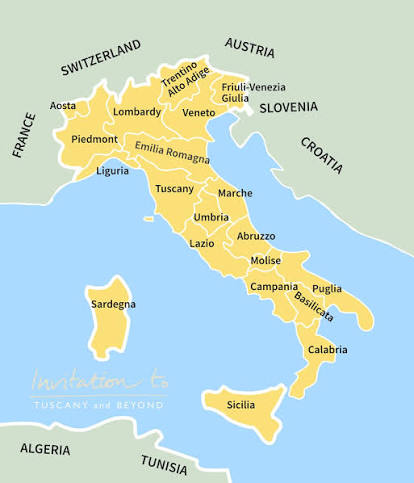
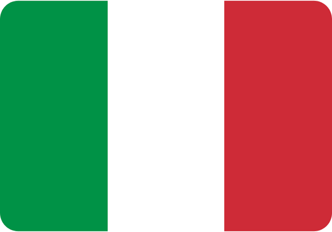
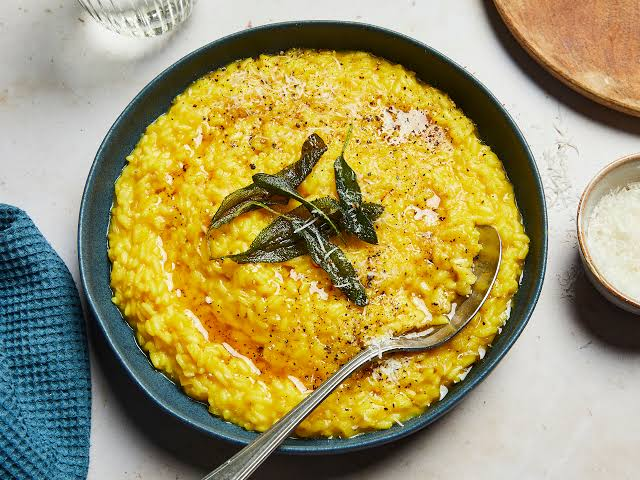
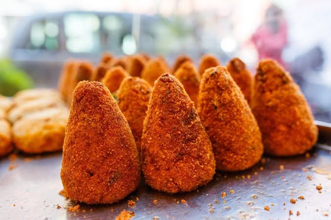
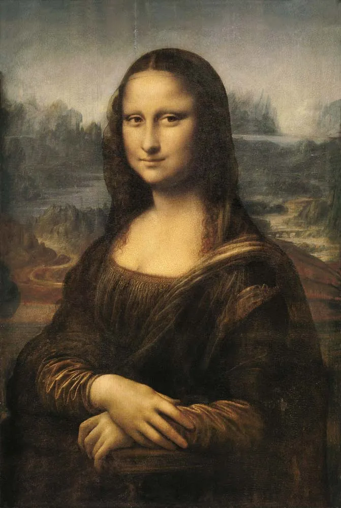
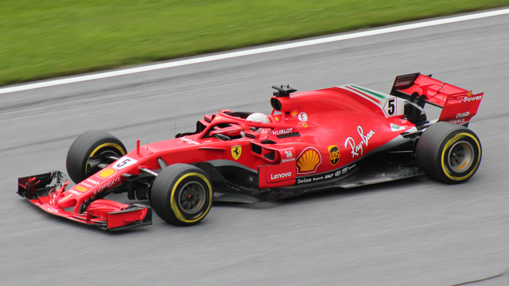

Alps, Apennines, plains, volcanoes, and coastlines
🗣️ Languages
Italian, with several regional minority languages
🍝 Food
Pasta, pizza, regional specialties, traditional desserts, cheeses, and wines
⭐ Known For
History, art, fashion, cuisine, and cultural heritage
Geography

Map of Italy with the 20 regions
Italy is a Mediterranean country located in Southern Europe, extending into the Mediterranean Sea as a long
peninsula surrounded by water on three sides. It shares land borders with France, Switzerland, Austria, and
Slovenia, while the independent states of Vatican City and San Marino are located within its territory. Its
landscape is highly diverse, featuring the Alps in the north, the Apennine Mountains running through the
peninsula, fertile plains such as the Po Valley, and numerous coastal areas and islands. Italy is also home
to several active volcanoes, including Mount Etna, Mount Vesuvius, and Stromboli, which have shaped the
country’s geography and history.
Italy is divided into 20 regions, each with its own unique landscapes, traditions, cuisine, and cultural
identity. These regions are commonly grouped into four main areas: Northern Italy, Central Italy, Southern
Italy, and Insular Italy.
Capital (and largest city): Rome (Roma)
Climate
Italy features a predominantly Mediterranean climate characterized by hot, dry summers and mild, wet
winters, though its long, boot-shaped geography creates striking regional variations. Northern Italy
experiences a humid continental climate with cold, snowy winters and hot, humid summers, while the south
remains mild and dry.
Topography
Italy's topography is characterized by a wide variety of landscapes, from towering mountains to coastal
plains and islands. The Alps dominate the northern border, creating some of Europe's highest peaks, while
the Apennine Mountains stretch along the length of the Italian Peninsula and form the country's central
mountain range. Between these mountains are fertile plains, including the Po Valley in northern Italy, one
of the country's most important agricultural and industrial areas. Italy also features numerous lakes,
coastlines, hills, and volcanic areas, including Mount Etna in Sicily and Mount Vesuvius near Naples,
contributing to the country’s diverse geography.
Origins
Italy has one of the world's most influential histories, with roots stretching back thousands of years.
Before becoming a unified nation, the Italian Peninsula was home to civilizations such as the Etruscans,
Greeks, and Italic peoples. The rise of Rome in the 8th century BCE transformed the region, as the Roman
Kingdom, Republic, and Empire expanded across the Mediterranean and left lasting contributions in law,
architecture, engineering, and culture.
After the fall of the Western Roman Empire in 476 CE, Italy became politically divided among various
kingdoms, city-states, and foreign powers. During the Middle Ages, cities such as Venice, Genoa, Florence,
and Milan became important centers of trade, art, and innovation. From the 14th to the 16th centuries, Italy
became the birthplace of the Renaissance, producing influential figures such as Leonardo da Vinci,
Michelangelo, Raphael, and Galileo Galilei.
For centuries, Italy remained divided until the 19th-century Risorgimento movement led to national
unification. Figures such as Giuseppe Garibaldi, Count Camillo di Cavour, and King Victor Emmanuel II helped
establish the Kingdom of Italy in 1861, with Rome becoming the capital in 1871.
During the 20th century, Italy experienced major changes, including participation in both World Wars and the
transition from monarchy to republic in 1946. Today, Italy is recognized for its rich historical heritage,
combining ancient Roman landmarks, medieval cities, Renaissance masterpieces, and modern cultural
achievements that continue to shape its regional identities, traditions, and cuisine.
Population and Major Cities
Population
As of 2026, Italy's total population is over 58.9 million people.
In addition, the country has a total area of 302,110 km² and a population density of 195.1/km².
Major Cities (as of 2026)
1. Rome
Rome, the capital of Italy and the capital of the Lazio region, is one of the world's most
historically significant cities. Founded according to tradition in 753 BCE, it became the center of
the Roman Empire and a major influence on law, architecture, politics, and culture. Today, Rome is
known for its ancient landmarks such as the Colosseum, Roman Forum, and Pantheon, as well as its
role as the home of Vatican City. The city combines thousands of years of history with modern
Italian life, making it one of the country's most visited and culturally important destinations.
Population: 2,745,062 people
2. Milan
Milan, located in the Lombardy region, is Italy's leading center for fashion, design, finance, and
business. The city has played an important role throughout history, from its time as the capital of
the Western Roman Empire to its development as a powerful medieval and Renaissance center. Milan is
home to famous landmarks such as the Duomo di Milano, La Scala opera house, and Leonardo da Vinci’s
The Last Supper. Today, it represents the modern and innovative side of Italy while maintaining its
rich artistic and historical heritage.
Population: 1,362,863 people
3. Naples
Naples, located in the Campania region, is one of Italy's oldest continuously inhabited cities and a
major cultural center in southern Italy. Founded by the Greeks and later influenced by the Romans,
Byzantines, Normans, and Spanish, the city has a unique blend of historical traditions and cultures.
Naples is famous for its historic city center, nearby archaeological sites such as Pompeii and
Herculaneum, and its connection to the origins of pizza. With views of Mount Vesuvius and the Bay of
Naples, the city is known for its vibrant atmosphere, cuisine, and artistic heritage.
Population: 905,050 people
4. Turin
Turin, the capital of the Piedmont region, is a city known for its royal history, architecture, and
industrial importance. It was the first capital of unified Italy from 1861 to 1865 and remains
closely connected to the country's political and cultural development. Turin is home to landmarks
such as the Mole Antonelliana, the Royal Palace of Turin, and the Egyptian Museum, one of the most
important collections of Egyptian artifacts outside Egypt. The city is also famous for its
automotive industry, particularly as the birthplace of Fiat, and for its contributions to Italian
chocolate and cuisine.
Population: 855,654 people
Landmarks
Leaning Tower of Pisa
The Leaning Tower of Pisa is a world-famous bell tower known for its distinctive tilt. Built in the
12th century, the tower began leaning due to unstable soil beneath its foundation. Rather than being
demolished, it became one of Italy’s most recognizable landmarks. Today, millions of visitors come
to Pisa each year to see the tower and the surrounding Piazza dei Miracoli.
The Colosseum
The Colosseum is the most iconic symbol of Ancient Rome and one of the most famous structures in the
world. Built in the 1st century AD, it was used for gladiator contests, public spectacles, and
large-scale events that entertained Roman citizens. Its massive stone structure and engineering
design highlight the power and architectural skill of the Roman Empire. Today, it is one of Italy’s
most visited tourist attractions and a UNESCO World Heritage Site.
Flag

Often referred to as the Tricolour, the flag of Italy consists of three equally sized vertical bands of
green,
white, and red, with the green positioned on the hoist side, as defined by Article 12 of the Constitution of
the Italian Republic.
Adoption
The Italian flag was first adopted on 29 June 1797 by the Cisalpine Republic,
inspired by the French Tricolour during the Napoleonic era. It was officially
adopted as the national flag of the Italian Republic on 18 June 1946 following
the establishment of the republic. The current colour specifications were
officially defined on 14 April 2006.
Symbolism
The colors of the Italian flag, known as the Tricolour, have several traditional interpretations. Green is
often associated with the country’s landscapes, such as its hills and plains, while also representing hope.
White is commonly linked to the snow-covered Alps and purity, and red represents the blood and sacrifices of
those who fought for Italian independence and unification. Together, the three colors symbolize Italy’s
natural beauty, history, and national identity.
History
The history of the Italian flag dates back to the late 18th century during the Napoleonic period. The green,
white, and red Tricolour was first introduced in 1797 by the Cisalpine Republic, a French-supported state in
northern Italy. Inspired by the French Tricolour, the flag became associated with the growing movement for
Italian identity and independence.
During the 19th century, the Tricolour became a powerful symbol of the Risorgimento, the movement that led
to the unification of Italy. Patriots and revolutionaries used the flag to represent freedom, unity, and the
creation of a single Italian nation. When the Kingdom of Italy was established in 1861, the Tricolour became
the national flag, featuring the royal coat of arms of the House of Savoy until the monarchy ended.
Following the establishment of the Italian Republic in 1946, the coat of arms was removed, creating the
modern version of the flag used today. The Italian Tricolour remains a symbol of national unity, cultural
heritage, and the history of Italy.
Languages
Italian is the official language of Italy and is spoken throughout the country. It developed from the Tuscan
dialect, particularly the Florentine variety used by writers such as Dante Alighieri, and became the
foundation of modern standard Italian. While Italian is now the main language used in education, government,
and media, many Italians also speak regional languages and dialects that reflect the country’s diverse
history and cultural identities.
Italy is home to many regional languages and dialects, which vary significantly from one area to another.
Examples include Sicilian in Sicily, Neapolitan in Campania, Lombard in northern Italy, Venetian in Veneto,
Sardinian in Sardinia, and Friulian in Friuli Venezia Giulia. Some of these languages are recognized as
historical minority languages and are protected by Italian law, highlighting the importance of preserving
Italy’s linguistic diversity.
Several areas of Italy also have officially recognized minority languages due to historical and cultural
influences. These include German in South Tyrol, French in Valle d’Aosta, Slovene in parts of Friuli Venezia
Giulia, and Ladin in the Dolomite region. This combination of standard Italian, regional languages, and
minority languages reflects Italy’s complex history and the unique identities of its regions.
Food
Italian cuisine is one of the most recognized and influential food traditions in the world, known for its
emphasis on fresh ingredients, regional diversity, and traditional preparation methods. Rather than having
one single national cuisine, Italy’s food culture varies greatly between regions, with each area developing
its own specialties based on local ingredients, history, and traditions. From the rich, butter-based dishes
of Northern Italy to the seafood-focused cuisine of coastal areas and the bold flavors of Southern Italy,
Italian food reflects the country’s diverse landscapes and cultural influences.
Italian cuisine is centered around simple but high-quality ingredients such as pasta, olive oil, tomatoes,
cheese, fresh vegetables, seafood, and meats. Many traditional dishes have been passed down through
generations and remain an important part of everyday life, often bringing families and communities together.
Italy is also famous for its cheeses, wines, desserts, and regional specialties, making food an essential
part of Italian identity and culture.
Northern Italy

Risotto alla Milanese
Risotto alla Milanese is a traditional rice dish from Milan in the Lombardy region. It is famous for
its golden color, which comes from the use of saffron, a spice that gives the dish its distinctive
appearance and flavor. Usually prepared with Arborio or Carnaroli rice, butter, cheese, and broth,
this creamy dish represents the rich and refined culinary traditions of Northern Italy.
Central Italy
Pasta Carbonara
Pasta Carbonara is one of Rome’s most famous dishes and a classic example of Roman cuisine.
Traditionally made with pasta, eggs, Pecorino Romano cheese, guanciale (cured pork cheek), and black
pepper, the dish is known for its rich and creamy texture without using cream. Originating in the
Lazio region, Carbonara represents the Italian approach of creating flavorful meals from a small
number of high-quality ingredients.
Southern Italy
Pizza Napoletana
Pizza Napoletana is one of Italy’s most iconic foods and originated in Naples, in the Campania
region. Recognized for its thin, soft crust with a slightly charred edge, traditional Neapolitan
pizza is made with simple ingredients such as tomatoes, mozzarella, basil, and olive oil. The dish
has become a symbol of Italian cuisine worldwide and reflects Naples’ long history of creativity,
tradition, and street food culture.
Insular Italy

Arancini
Arancini are traditional Sicilian rice balls that are one of the most famous street foods from the
island of Sicily. Typically made with rice, saffron, cheese, and fillings such as ragù, peas, or
mozzarella, they are shaped into balls or cones, coated in breadcrumbs, and fried until golden and
crispy. The dish reflects Sicily’s diverse cultural history, combining Italian traditions with
influences from Arab, Spanish, and Mediterranean cuisines. Today, arancini are enjoyed throughout
Sicily and have become a symbol of Sicilian cuisine both in Italy and around the world.
Art and Music
Art

The Mona Lisa by Leonardo Di Vinci
Italy has played a central role in the development of art throughout history, influencing movements such as
Roman art, the Renaissance, Baroque, and modern artistic traditions. During the Renaissance, cities like
Florence, Rome, and Venice became major cultural centers, producing some of the world’s most famous artists,
including Leonardo da Vinci, Michelangelo, Raphael, and Botticelli. Their works transformed painting,
sculpture, and architecture, with masterpieces such as the Mona Lisa, the ceiling of the Sistine Chapel, and
The Birth of Venus becoming symbols of artistic achievement. Today, Italy continues to be recognized for its
museums, historic buildings, and contributions to fashion, design, and contemporary art.
The Mona Lisa, painted by Leonardo da Vinci during the Renaissance, is one of the most famous artworks in
the world. Created in the early 16th century, the painting is admired for its realistic detail, mysterious
expression, and Leonardo’s innovative use of techniques such as sfumato, which creates soft transitions
between colors and tones. Originally from Italy, Leonardo became one of the most influential figures of the
Renaissance, contributing to advancements in art, science, and innovation. Today, the Mona Lisa remains a
symbol of Italy’s extraordinary artistic heritage and the lasting global influence of Italian Renaissance
art.
Italy has a rich musical heritage that has influenced the world for centuries. Italy is widely considered
the
birthplace of opera, with composers such as Claudio Monteverdi, Antonio Vivaldi, Gioachino Rossini, Giuseppe
Verdi, and Giacomo Puccini creating some of the most famous works in classical music. Italian musicians also
played an important role in the development of modern musical notation and classical traditions, shaping how
music
is composed and performed today. Beyond classical music, Italy has a diverse modern music scene, including
pop, folk, and regional traditions that reflect the country’s cultural diversity.
Luciano Pavarotti was one of Italy’s most famous opera singers and one of the greatest tenors in history.
Born in Modena, in the Emilia-Romagna region, Pavarotti became internationally recognized for his powerful
voice, emotional performances, and contributions to making opera more accessible to wider audiences. He
performed in some of the world’s most prestigious opera houses and was also known for his performances with
the Three Tenors, alongside Plácido Domingo and José Carreras. His legacy represents Italy’s long and
influential tradition of opera and classical music.
Sports
Sports play an important role in Italian culture, bringing communities together and reflecting the country's
passion, traditions, and regional identities. Football (soccer) is by far the most popular sport in Italy,
with millions of fans following the national team and domestic competitions such as Serie A. However, Italy
also has a strong history in sports such as cycling, motorsport, volleyball, tennis, and winter sports, each
contributing to the country's sporting heritage.
Italy has achieved international success in many sports, with the national football team winning the FIFA
World Cup four times and Italian athletes earning recognition in competitions around the world. The country
is also home to some of the most iconic sporting events and organizations, including the Giro d’Italia
cycling race, the Italian Grand Prix at Monza, and legendary football clubs such as Juventus, AC Milan, and
Inter Milan. Sports in Italy continue to represent national pride while connecting modern achievements with
long-standing traditions.
Football (Soccer/Calcio)
Football is the most popular and followed sport in Italy, with a deep connection to Italian culture
and national identity. The country has one of the world's most historic football traditions, with
the Italian national team (Azzurri) winning the FIFA World Cup four times. Italy is also
home to one
of Europe's most famous leagues, Serie A, featuring legendary clubs such as Juventus, AC Milan,
Inter Milan, and AS Roma. Football matches are an important social event, bringing together fans and
communities across the country.
Cycling
Cycling has a long and respected tradition in Italy, both as a competitive sport and a recreational
activity. The country hosts the Giro d’Italia (pictured above), one of cycling’s three Grand Tours
and one of the
most prestigious races in the world. Italian cyclists have achieved international success, and the
sport remains closely connected to Italy’s landscapes, from the Alps and Dolomites to the
countryside roads of Tuscany and other regions.
Motorsports

Italy has a strong motorsport heritage, especially through its connection to automotive engineering,
racing, and luxury performance vehicles. The country is home to Ferrari, one of the world’s most
famous racing teams and car manufacturers, as well as other iconic automotive brands such as
Lamborghini, Maserati, and Alfa Romeo. Italy is also known for the historic Autodromo Nazionale
Monza, which hosts the Italian Grand Prix. Motorsport reflects Italy’s passion for innovation,
design, craftsmanship, and high-performance vehicles.
Tennis
Tennis has grown significantly in popularity in Italy, with major tournaments and successful Italian
players contributing to the sport’s development. The country hosts the Italian Open (Internazionali
BNL d’Italia) in Rome, one of the most important clay-court tournaments in the world. Italian
players have achieved success internationally, helping increase the sport’s popularity among younger
generations.
Explore the beauty of Italy
Want to learn more about Italy? Watch this video to explore its landscapes,
history, culture, and traditions.